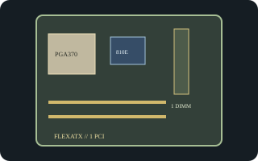

[ INDIVIDUAL COMPONENT // MOTHERBOARDS ]
Intel Desktop Board D810EMO / MO810E
Intel FlexATX Socket 370 platform for Pentium III/Celeron processors. The Intel technical specification pairs the D810EMO board name with MO810E platform/BIOS identifiers.

Exact identity and revision: Intel Desktop Board D810EMO/MO810E, technical specification revision 001 (January 2001), standard BIOS ID MO81010A.86A. Confirm printed AA/PCB revision and BIOS ID; this model is not interchangeable with other D810 boards.
Specifications
| CPU / socket / chipset | Socket 370 Intel Pentium III and Celeron models supported by the MO81010A.86A specification; Intel 810E with integrated graphics. |
|---|---|
| Form factor / case | FlexATX, 9 x 7.5 in. (229 x 191 mm); use a FlexATX-capable chassis or verified ATX case with matching holes and I/O cutout. |
| Memory | One 168-pin, 100-MHz non-ECC SDRAM DIMM, maximum 256 MB. |
| Expansion | One PCI expansion slot. |
| Storage | Primary IDE plus a slimline secondary IDE connector and floppy interface. |
| Rear I/O | VGA, LAN, two USB, and audio line-out/microphone; internal headers and exact jack options are revision/assembly dependent. |
| BIOS / PSU | Intel BIOS family MO81010A.86A. ATX 20-pin power input; the compact board does not imply a proprietary PSU, but verify connector, voltage rails, and chassis wiring on the specimen. |
Compatibility and revision notes
FlexATX is smaller than microATX; a case must provide the correct mounting pattern, rear-I/O opening, and PCI clearance. The single-DIMM limit is 256 MB and does not support DDR. Match the exact D810EMO/MO810E BIOS ID and processor list; never use a similarly named D810 image.
Sources & further reading
- Intel Desktop Board D810EMO/MO810E Technical Product Specification, revision 001 (archived Intel document)Exact model's technical layout, BIOS identifier, power, memory, and connector reference.
- Intel: first FlexATX desktop board announcement (May 2000)First-party Intel-era context for the compact form factor; board-specific fit remains governed by the technical specification.